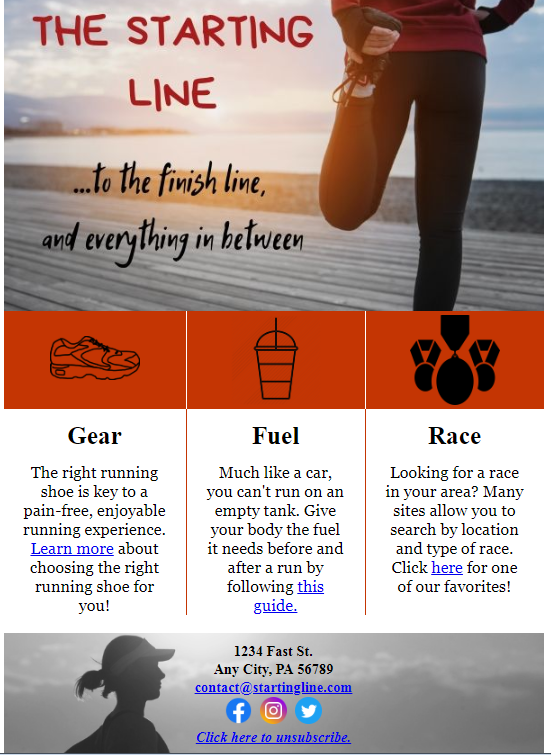
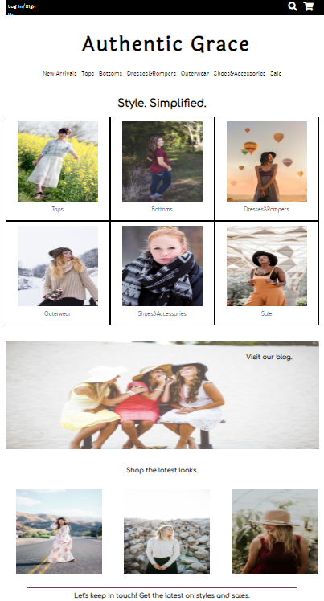
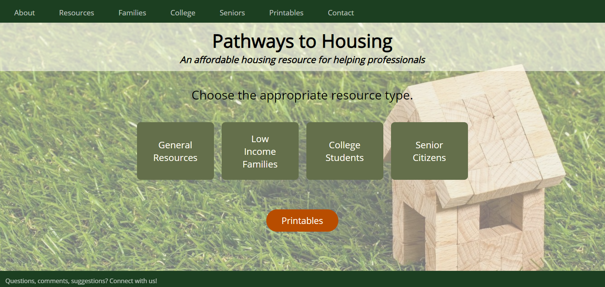
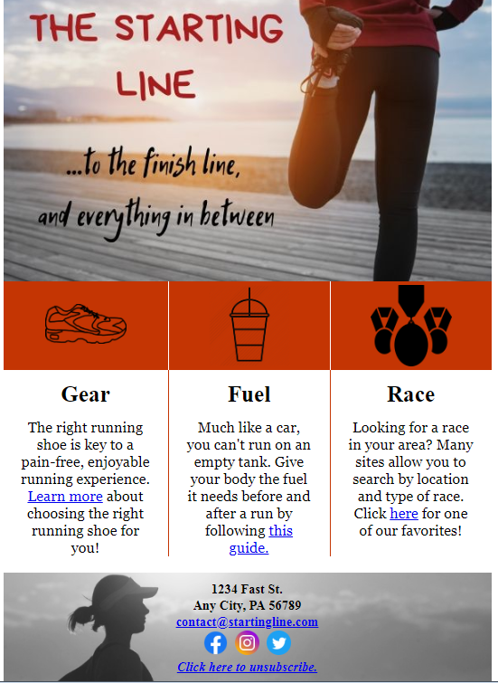
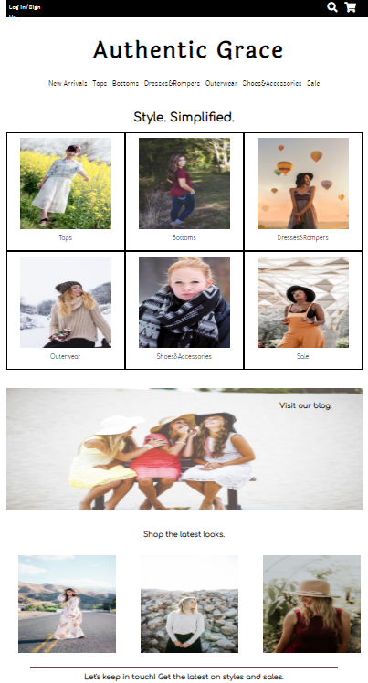
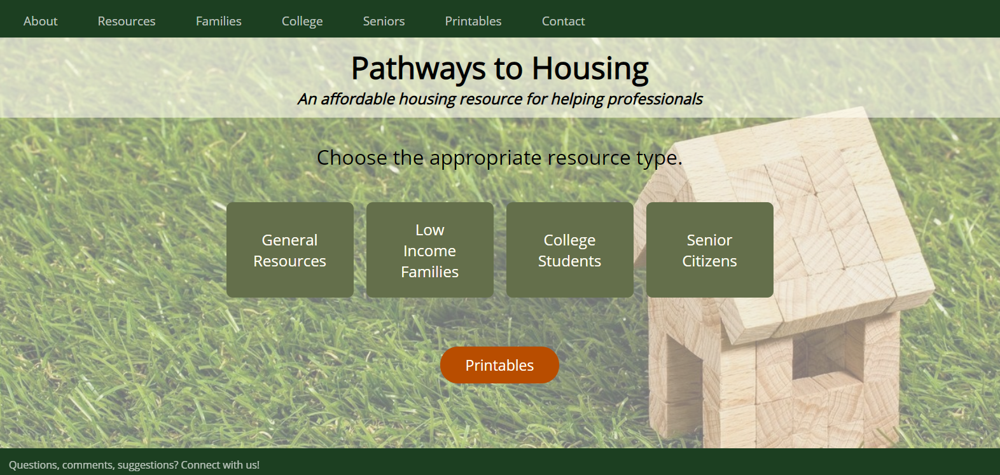

Projects
Check out what I've been working on. Click the image to learn more.
|  |  |  |
| HTML Email Newsletter | Authentic Grace Fictional Boutique | Pathways to Housing |
Enthusiastic web developer UX designer, and client support champion.
Check out what I've been working on. Click the image to learn more.
|  |  |  |
| HTML Email Newsletter | Authentic Grace Fictional Boutique | Pathways to Housing |
 |
 |
 |
| Starting a Project in VS Code | How to Organize Your Life with Trello | Stay tuned! |
Marcie Ferrick is a current student of Moms Can Code School and an avid self-studier, honing her skills in HTML, CSS, and Javascript. She has worked with diverse populations to provide resources and support services aiding students in their educational journeys. Often commended for her quick response time and resourcefulness, she enjoys helping others, and hopes to translate her skills and strengths in communication, organization, and problem-solving to a web development career, helping others create websites that will fuel their personal and professional growth. When she’s not working to cultivate her dream career, Marcie enjoys books, comedy, and most of all, spending time with her charismatic two year-old son. Connect with her on social @troobeautyblog on Twitter and @troobeautyhonestly on Instagram! |
© Untitled. Design: HTML5 UP.